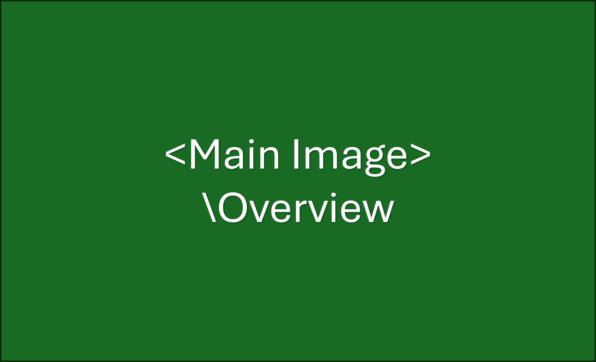

Program Overview
SleuthCPS is an intensive, week-long program designed to introduce Virginia’s University students to the exciting world of digital forensics for Industrial Control Systems (ICS) and Cyber-Physical Systems (CPS). Participants will dive into hands-on labs and real-world scenarios, learning how to investigate cyber-attacks against critical infrastructure like power grids, smart buildings, and automated systems.
Key Details
- Purpose: A hands-on introduction to digital forensics for Industrial Control Systems (ICS).
- Target Students: Undergraduate students, primarily from Virginia Commonwealth University (VCU), James Madison University (JMU), and Virginia State University (VSU).
- Location: Online.
- Duration: 5 Days.
- Dates: Oct 20-24, 2025.
- Time: 9:00 AM to 12:00 PM each day.
- Cost to Students: Free.
What You Will Learn
The curriculum is designed to build a strong foundation in ICS security and forensics through a series of lectures and hands-on activities:
- Day 1: Intro to ICS/SCADA: Understand what PLCs are and how they control physical processes.
- Day 2: ICS Protocols & Attacks: Learn how control systems communicate and the common ways they are attacked.
- Day 3: Network Traffic Analysis: Use tools like Wireshark to analyze industrial network traffic for signs of an intrusion.
- Day 4: Memory Forensics: Dive deep into a PLC's memory to find hidden artifacts and evidence of tampering.
- Day 5: The Final Challenge: The final challenge will be unveiled on Day 5 and the participants will have one week to submit their responses online on the submission portal (will be shared on Day 5)